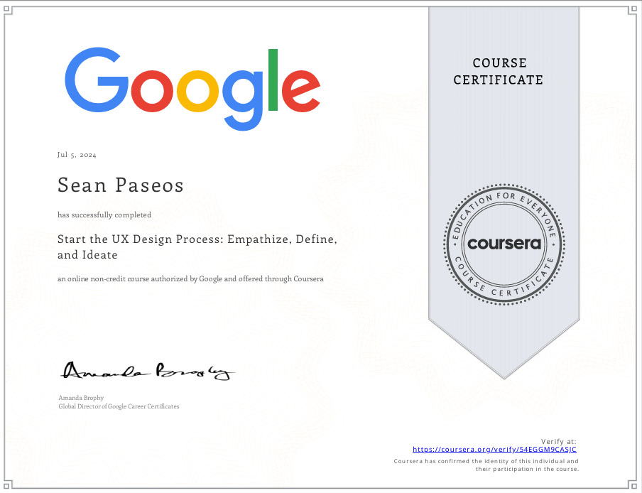

Sean

Information Systems Student | Mapúa University
Philippines
Accomplishments & Certifications
- Dean's List - Mapúa University (Multiple Semesters)
- Top 10 in Information Systems Research Project Competition
- Google Cloud Digital Leader Certification
- Best System Design Award in IS 101 Project
- Mapúa Information Systems Innovation Award
- Generated AI for Educators Certificate
Pictorial Evidence

Welcome to my profile!
I am currently pursuing an Information Systems course at Mapúa University, gaining hands-on experience with technology, systems development, and business processes. My expertise spans software development, cybersecurity, data management, and more.
Skills
- Software Development & Programming
- Data Analysis & Management
- Network Security
- System Administration
- UI/UX Design
- Project Management
Skills Progress
Software Development
90%
Data Analysis
85%
Cybersecurity
80%
UI/UX Design
95%
Notable Projects
- Capy: Academic Time Management App
- Stylest: Online Shopping UI Design
- Paseos_Remonde_ATM: ATM System Refactoring
- SchoolPlan: Event Management System
- Smart Waste Management System: Optimization for Collection Scheduling